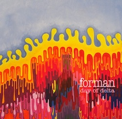

Music
"Day of Delta" is a snapshot of a band in constant metamorphosis. They faced new challenges during the writing process: they lost their original bassist of 4 years; they lived scattered across New York and had to travel 100 miles to rehearse; and each member was a working musician caught in the middle of the economic downturn. As their stability as humans and as a band waned, the music began reflecting the dark catharsis happening in their lives. The songs are a portrait of honest frustration viewed through the lenses of relationships, jobs, and the confoundingly nebulous idea of what it means to be a musician.
- produced by Rich Bozek and Mike Kemmlein - basic drums, bass, and guitar recorded live by Paul Cesario at Cellar Productions, New City, NY - vocals, overdubs, and additional audio recorded by Rich Bozek at Bad Landlady Studios and Dungeon House Studios, Nyack, NY - mixed by Brian Cass and Rob Pemberton at SoundsInterestingStudio.com - mastered by Mark Donahue at Soundmirror Inc. - artwork by Beitiak
Fat Seeds - click play below or listen on SoundCloud to download for free click the small arrow
Head West - click play below or listen on SoundCloud to download for free click the small arrow
Balance
- Debasement in the Basement - listen
- Runaway
- Jjjoe Mamma's Struttt
- Brett's Jam
- Abu's Karma
- Tank Attack
- Pound - listen
- Up to You - listen
- Deed
Released May 20 2008 click here for lyrics
"Balance" is a celebratory, hyperactive romp through the diverse traditions of American music, warping numerous Western musical styles and passing them through a modern funk/rock filter. Almost palpable is a fiery young-adult passion for ferocious musicianship and performance.
- produced by Rich Bozek, Mike Kemmlein, and Jon "Jonny Rod" Ciorciari - recorded, engineered, and mixed by Jonny Rod at JRod Productions in New City, NY - mastered by Alan Silverman at Arf! Mastering - note: all bass and a lot of vocals on this album performed by Dan Noonan - keys on tracks 3, 4, 5, and 8 by Jason Press - percussion on tracks 2 and 6 by Jeff Mann - artwork by Bobby Rosenstock
Debasement in the Basement - click play below or listen on SoundCloud to download for free click the small arrow
Pound - click play below or listen on SoundCloud to download for free click the small arrow
Up to You - click play below or listen on SoundCloud to download for free click the small arrow